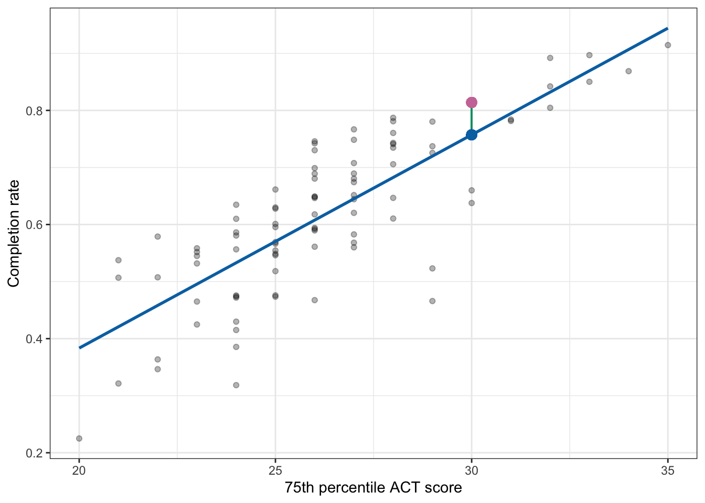
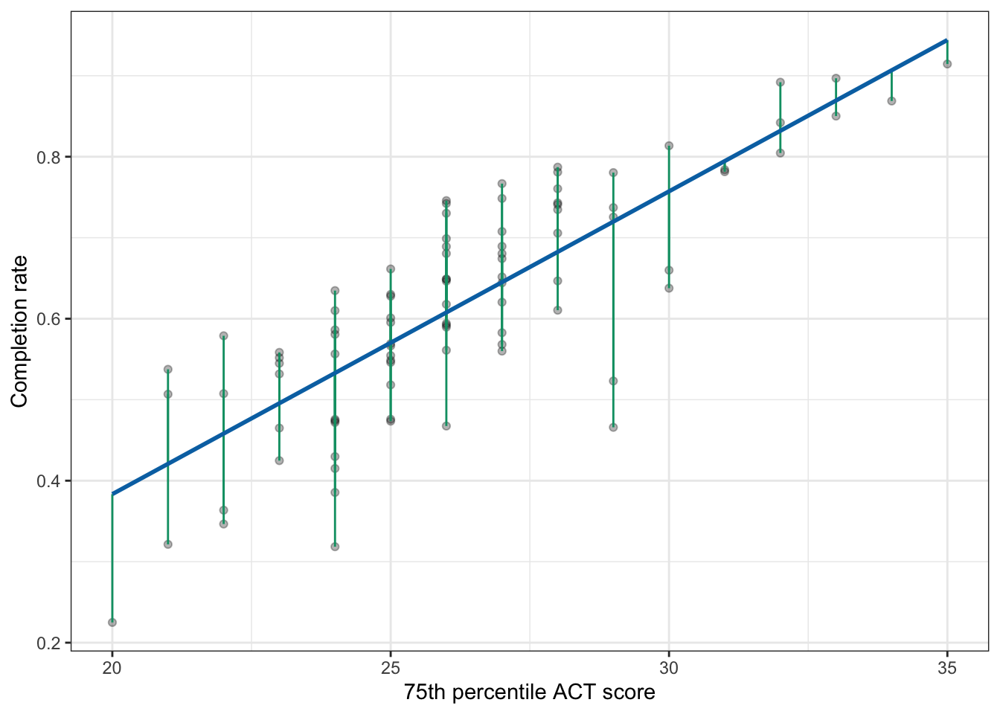
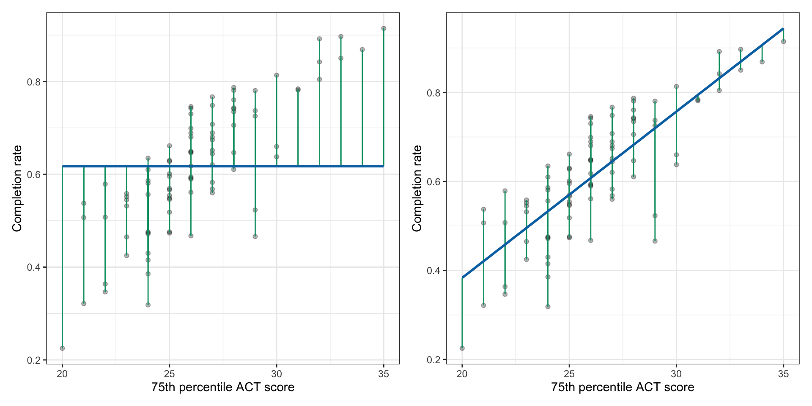

26\(R^2\): Quantifying the Strength of the Linear Relationship
In this chapter you will learn about using the statistics \(R^2\) to quantify the strength of a linear regression between two quantitative attributes.
26.1 Recap: College Completion Rates and ACT Scores
In Chapter 25, we fitted a linear regression model to answer the research question of whether ACT scores are predictive of better institutional outcomes.
The data suggested that there was a positive, linear relationship between 75th percentile ACT score and completion rate for the 92 institutions in our sample (\(r = 0.808\)), indicating that colleges with higher 75th percentile ACT scores tended to also have higher completion rates. The fitted equation was:
The results of the regression analysis suggested that each 1-point difference in 75th percentile ACT scores of education is associated with a 0.037-unit difference in completion rates, on average.
26.1.1 Quantifying Aspects of the Relationship
Remember that when we describe a relationship between two quantitative attributes, we touch on four characteristics of the relationship:
Functional form of the relationship
Direction/Trend
Magnitude of the line, and
Strength
The functional form helps us decide the mathematical form that the model should take (e.g., linear, quadratic). It also helps us determine the appropriate summary measures that can help quantify the other three characteristics we describe. For example, the correlation coefficient (r) helps us quantify the direction of the relationship, as does the slope of the regression line (\(b_1\)). The slope of the regression line also quantifies the magnitude (i.e., “steepness”) of the relationship.
Neither the correlation coefficient, nor the slope, however, provide a quantification of the strength of the relationship. Remember that the strength of the relationship describes how well the data adhere to the functional form (i.e., how closely the observations lie to the line).
Once we have the fitted equation, we can add that to the scatterplot to better evaluate the strength of the linear relationship. To do this we will use the geom_abline() function, which takes the arguments intercept= and slope=. We provide the estimates for these coefficients from our fitted equation to these arguments, and then literally add this function to the scatterplot.
Scatterplot displaying the relationship between wine price and rating for the 90 wines in the sample. The fitted linear regression line is also displayed on the plot.
This relationship seems pretty strong, with the data generally clustered pretty close to the line that describes this relationship.
26.2 Residuals: The Key to Measuring “Closeness” to the Line
Remember that visually, the residual is the vertical distance between the point and the regression line. In the previous chapter, we illustrated this by showing the residual for the Marquette University, which was 0.057.

Plot displaying the 75th ACT scores and completion rates along with the fitted regression line (blue). Marquette University’s observed completion rate (pink dot) and the predicted mean for colleges with a 75th percentile ACT score of 30 (blue dot) are both plotted. A visual representation of Marquette University’s residual (green line) is also displayed.
Graphically, the length of the vertical line represents the value of the residual—in the case of Marquette University, the length of the vertical line is 0.057 units. (The metric is the same as the original y attribute; in this case completion rate.) Because the vertical line is above the regression line, we know the sign on the residual is positive. Figure 26.1 shows the plotted residuals for all 92 observations. (Note that for any set of colleges with the same ACT score, there is potential for their residual lines to be on top of other residual lines.)

Figure 26.1: Plot displaying the 75th ACT scores and completion rates along with the fitted regression line (blue). A visual representation of each university’s residual (green lines) is also displayed.
In general, if the observation is close to the line, the green line for the residuals is short, whereas if the observation is far away from the line the green line for the residuals is long. We can use this idea to quantify the strength of the relationship. That is, we can consider whether, in general, the green residual lines are short or long.
While we can eyeball this from the plot, we want to quantify how close the observations are to the line. Recall that we can compute each observation’s residual using:
\[
e = Y - \hat{Y}
\]
We can use the resid() function to compute the residuals in R. We provide this function with the name of the lm() object, in our case lm.a.
# Get residualsmy_residuals <-resid(lm.a)# View residualsmy_residuals
These residuals are in the same order as the observations in the data; the first observation in the data is Buena Vista University which corresponds to the first residual of 0.0574753580. To quantify the strength we need to determine whether these residuals are small or big, in general. One way to do that is to find the size of the average residual:
# Compute average residualmean(my_residuals)
[1] -1.046491e-18
The value we get is in scientific notation. The e-18 means “times 10 to the \(-18\)th power. That is:
This is essentially equal to 0. We are saying that the average residual is 0! That is completely not true. Looking at the scatterplot, it is clear that the average residual will have some length…not 0. The problem is that some of the residuals are positive and some are negative, so adding them together gives a sum of 0.
\[
\sum e = 0
\]
Because of this finding the average does not help us quantify the strength of the relationship.
26.2.1 Sum of Squared Error
To remedy this problem before we sum the residuals, we will square them to make them all positive. Mathematically, we are computing:
\[
\sum e^2
\]
Using R, we will square the residuals and then use the sum() function to add them together.
sum(my_residuals ^2)
[1] 0.6120481
This value is refer to as the Sum of Squares Residual or the Sum of Squared Error (SSE). It is a quantification of the total amount of error in the model (albeit in a squared metric). In our example,
\[
\text{SSE} = 0.612
\]
26.3 Comparing SSE to a Baseline Model
While the SSE gives us a quantification of the total amount of error in the model it isn’t useful (by itself) for considering the strength of the relationship. This is for two reasons. First finding the average of this sum is not helpful as the metric has changed to squared completion rates. Even if we converted back to the original metric by taking the square root after finding the average, we still don’t know if the value represents a “weak”, “moderate”, or “strong” relationship. This is because the quantification would be dependent on the metric used in the y attribute, which is our second problem. This implies that you would have to evaluate strength differently depending on how you measured the attribute you use as your outcome. Ideally, we want to use a measure that does not depend on the metric used in the attribute.
The solution to this is to compare the SSE value to a SSE value computed from a “baseline” model. The baseline model that we will use is the intercept-only model. The intercept-only model is mathematically expressed as:
\[
Y = \beta_0 + \epsilon
\]
That is, it only includes the y-intercept and does not include any other effects. If we use this model to predict completion rates we are saying that ACT scores do not matter in predicting colleges’ completion rates as it is not included in the model. To fit this model we use lm(y ~ 1, data=dataframe).
# Fit intercept-only modellm.0=lm(completion_rate ~1, data = colleges)# View coefficientlm.0
Scatterplot displaying the relationship between wine price and rating for the 90 wines in the sample. The fitted intercept-only linear regression line is also displayed on the plot.
The intercept-only line is a flat line. Think about what this means for predictions. Consider a college that has a 75th percentile ACT score of 20. Their predicted completion rate from this model is 0.6175. What about a college that has a 75th percentile ACT score of 25? Their predicted completion rate from this model is also 0.6175. How about a college that has a 75th percentile ACT score of 35. Their predicted completion rate from this model is also 0.6175. ACT score DOES NOT matter in the prediction of completion rate!
One interesting fact about the value of 0.6175 is that it is the mean completion rate for all schools in the sample.
df_stats(~completion_rate, data = colleges)
This implies that the predicted value for the intercept-only model, regardless of a school’s ACT score will be the mean completion rate. That is, when we aren’t using any information (predictors) to predict something, the best prediction is the mean.
26.3.1 SSE from the Baseline Model
We can also compute the residuals and SSE for the baseline model. Figure 26.2 shows the residuals for both the intercept only model and the model that included ACT as a predictor of completion rates. From these plots, you can see that the residuals from the intercept-only model tend to be larger (the green segments are longer) than the residuals from the model that used ACT as a predictor. This means that the squared residuals, and susequently the sum of the squared residuals will also be larger for the intercept-only model.

Figure 26.2: LEFT: Plot displaying the 75th ACT scores and completion rates along with the fitted regression line for the intercept-only model (blue). A visual representation of each university’s residual (green lines) is also displayed. RIGHT: Plot displaying the 75th ACT scores and completion rates along with the fitted regression line using ACT as a predictor (blue). A visual representation of each university’s residual (green lines) is also displayed.
We can compute the SSE for the intercept-only model similar to how we computed it for our model that included ASCT as a predictor.
# Get residuals for intercept-only modelmy_residuals <-resid(lm.0)# View residualsmy_residuals
Although this value is a sum of squared residuals, because it comes from the intercept-only model we refer to it as the Sum of Squared Total (SST). This is because it is a quantification of the total amount of variation in the data (again, in a squared metric). In our example,
\[
\text{SST} = 1.766
\] If we again consider the mathematics behind the SST, we can gain some insight into why it is a quantification of the variation in the data, and also how it relates to other measures of variation that you already know. The way we computed SST was:
\[
\text{SST} = \sum(Y - \hat{Y})^2
\]
But in the intercept only model we saw that the predicted value (i.e., \(\hat{Y}\)) is the mean value of Y. So the SST can also be written as:
\[
\text{SST} = \sum(Y - \bar{Y})^2
\]
This quantity is seen in our formulas for the variance and standard deviation. The formulas for these are:
\[
\text{Var}(Y) = \frac{\sum(Y - \bar{Y})^2}{n-1} \qquad\qquad \text{SD}(Y) = \sqrt{\frac{\sum(Y - \bar{Y})^2}{n-1}}
\] Note that the variance formula is essentially a mean—it is a sum divided by how many things there are.1 So the variance is finding the mean amount of variation (from the sample mean) in the data in a squared metric. The SD is the square root of the variance, so it is getting rid of the squared metric. That is why we interpret the SD as the average amount of variation from the sample mean.
26.4 Using the SST and SSE to Quantify Strength
Now that we have both the SST and SSE values we can use them to quantify the strength of the initial relationship between 75th percentile ACT scores and completion rates. To do this, we are going to compute the proportion reduction in error (PRE) between the baseline (intercept-only) and ACT predictor models. This will tell us how much smaller the SSE is after we include ACT in the model relative to the SSE from the baseline model. That is, we are going to compute:
\[
\begin{split}
\text{PRE} &= \frac{1.766 - 0.612}{1.766} \\[2ex]
&= \frac{1.154}{1.766} \\[2ex]
&= 0.65
\end{split}
\] To interpret this we say,
Including 75th percentile ACT scores as a predictor of completion rates reduces the error variation in the model by 65.3%.
Or, another way to interpret this value is to consider our sum of squares values. Mathematically, sums of squares are additive in that the SSE and another sum of squared value (the sum of squared model; SSM) add together to equal the SST.
\[
\text{SST} = \text{SSM} + \text{SSE}
\] Because of this the SSM is:
\[
\text{SSM} = \text{SST} - \text{SSE}
\]
For us the values of these sum of squares are:
\(\text{SST} = 1.766\)
\(\text{SSM} = 1.154\)
\(\text{SSE} = 0.612\)
The SSM represents the amount of variation (in a squared metric) that is explained by the model. Using the three quantities the total amount of variation in the data (SST) is equal to the amount of variation explained by the model (SSM) and the amount of variation that is unexplained by the model (SSE). That is after including 75th percentile ACT score in the model we explain some of the total variation in completion scores, but not all of it. There is still some variation in completion scores that is unexplained by differences in 75th percentile ACT scores.
In other words, we see that there is variation in colleges’ completion rates (total variation in the data). Some of this is because colleges have different 75th percentile ACT scores (the explained variation by the model). Some of it is because of other factors (unexplained variation after ACT is included).
Also notice that in our formula to compute the PRE, the SSM is the numerator value in this expression.
So the PRE is not only telling us the proportion of error that was reduced after including ACT in the model, but it also is a proportion of the explained variation relative to the total variation in the data. This gives us an alternative interpretation of the PRE, namely:
Differences in 75th percentile ACT scores EXPLAIN 65.3% of the original variation in completion rates.
This is the interpretation that most applied researchers use for PRE. It is a measure of the strength of the relationship because it tells us how “good” a predictor is in explaining variation in the outcome we are trying to predict.
26.4.1 Shortcut to Computing PRE
It turns out that in a regression model that only includes a single predictor there is a shortcut for computing the PRE. The PRE is equal to the square of the correlation coefficient:
\[
\text{PRE} = r^2
\]
In applied work, the PRE metric is often referred to as \(R^2\). An alternative computation is to therefore, compute the correlation coefficient and square it.
# Compute R2cor(completion_rate ~ act, data = colleges) ^2
[1] 0.6534083
Because this strength metric is related to the correlation coefficient, we now can think about what different values of \(R^2\) indicate based on how they relate to the correlation value (r). Consider the following correlation values and \(R^2\) values:
Correlation (r) and the corresponding R2 value.
r
R2
0.00
0.000
±0.10
0.010
±0.20
0.040
±0.30
0.090
±0.40
0.160
±0.50
0.250
±0.60
0.360
±0.70
0.490
±0.80
0.640
±0.90
0.810
±1.00
1.000
Unless the correlation value is 0 or 1, the \(R^2\) value is always less than the correlation value (after all, we are squaring decimal values). This means that the amount of variation in the outcome that a predictor explains will generally be less than its level of correlation. In fact, until you get to correlations of \(r > 0.70\), the amount of variation explained by a predictor is less than half.
Because the \(R^2\) value is generally smaller than the \(r\) value, it makes it a better indication of the strength of the relationship than the correlation coefficient, which is overly optimistic. Moreover, the value of \(R^2\) is based on the residuals which measure the fit of the data to the line—which is how we defined strength.
Lastly, we point out that \(R^2\) is often reported as an effect size for a regression model. We will come back to this in the next chapter when we discuss inference to see how this value measures the extent to which sample regression results diverge from the expectations specified in the null hypothesis.
As with other quantitative metrics, whether a predictor is a “good” predictor can not be determined by the \(R^2\) value alone. It also depends on the substantive field. An \(R^2\) value of 0.34 might constitute a worthless predictor in some fields but a great predictor in another field. Only by reading and understanding the literature in a field can you make this judgement.
Technically we divide by \(n-1\), but for larger sample sizes n and \(n-1\) are approximately the same.↩︎